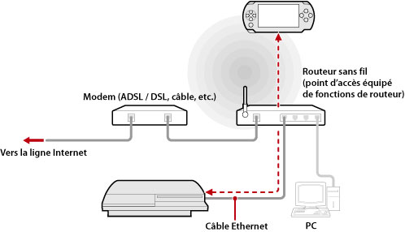
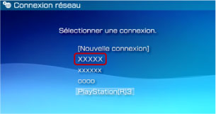

Réseau > Utilisation de la lecture à distance (via un point d'accès)
Utilisation de la lecture à distance (via un point d'accès)
Connectez le système PS3™ à un point d'accès à l'aide d'un câble Ethernet et utilisez la fonction LAN sans fil du système PSP™ pour vous connecter au système PS3™ par le biais du point d'accès.
Exemple de configuration courante

Conseils
- Un routeur sans fil est un périphérique qui ajoute la fonctionnalité de point d'accès à un routeur. Un point d'accès est un périphérique permettant de se connecter sans fil à un réseau. Un routeur est un périphérique utilisé en cas de partage d'une connexion Internet entre plusieurs périphériques.
- Un modem peut être équipé de la fonctionnalité de routeur. Connectez le système PS3™ à un périphérique équipé de cette fonctionnalité.
- Si le point d'accès et le modem sont tous les deux dotés de la fonctionnalité de routeur, désactivez-la sur un de ces périphériques. Le système PS3™ et le système PSP™ doivent être connectés au sein du même réseau. Si plusieurs routeurs sont utilisés simultanément, il se peut que le système PS3™ et le système PSP™ soient connectés à des réseaux distincts et que vous ne puissiez pas utiliser la lecture à distance.
Préparation à l'utilisation (système PS3™ et système PSP™)
Lors de votre première utilisation de la lecture à distance, vous devez enregistrer (associer) le système PSP™ auprès du système PS3™. Enregistrez le système sous  (Paramètres) >
(Paramètres) >  (Paramètres de lecture à distance) > [Enregistrer le périphérique].
(Paramètres de lecture à distance) > [Enregistrer le périphérique].
Préparation à l'utilisation (système PSP™)
Pour créer une connexion réseau en vue de connecter le système PSP™ à un point d'accès. Si le système PSP™ possède déjà une connexion réseau enregistrée à utiliser pour se connecter à un réseau par le biais d'un point d'accès, il n'est pas nécessaire de créer une nouvelle connexion réseau. Pour plus de détails sur la création d'une connexion réseau, reportez-vous au mode d'emploi du système PSP™.
Utilisation de la lecture à distance
1. |
Sélectionnez |
|---|---|
2. |
Sélectionnez |
3. |
Sélectionnez [Connexion par réseau privé]. |
4. |
Dans la liste des connexions, sélectionnez celle du point d'accès à utiliser pour la lecture à distance.  Si la connexion aboutit, l'écran du système PS3™ s'affiche sur le système PSP™. |
 (Réseau) >
(Réseau) >  (Lecture à distance) dans le système PS3™.
(Lecture à distance) dans le système PS3™. (Lecture à distance) dans le système PSP™.
(Lecture à distance) dans le système PSP™.Conseils
- La lecture à distance peut être utilisée à portée du signal du point d'accès.
- Si vous activez le démarrage à distance sur le système PS3™, vous pouvez configurer votre système afin qu'il s'active automatiquement (Wake on LAN). Dans ce cas, vous pouvez ignorer l'étape 1 ci-dessus. Pour plus de détails, consultez la section (Paramètres) > (Paramètres de lecture à distance) > [Démarrage à distance] dans le présent mode d'emploi.
Quitter la lecture à distance
Appuyez sur la touche PS (touche HOME (accueil)) du système PSP™, puis sélectionnez [Terminer la lecture à distance] > [Fermer et éteindre le système PS3™].
Conseil
Sélectionnez [Fermer sans éteindre le système PS3™] si vous utilisez votre système PS3™ pour copier des fichiers ou encore pour télécharger en tâche de fond ou exécuter d'autres tâches qui exigent que votre système reste sous tension.